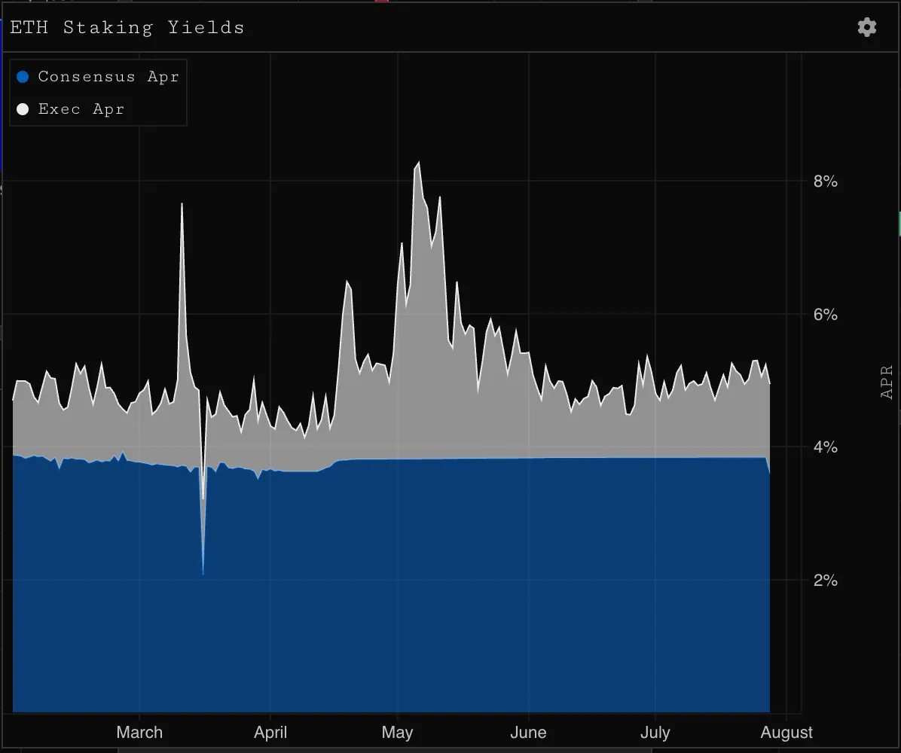
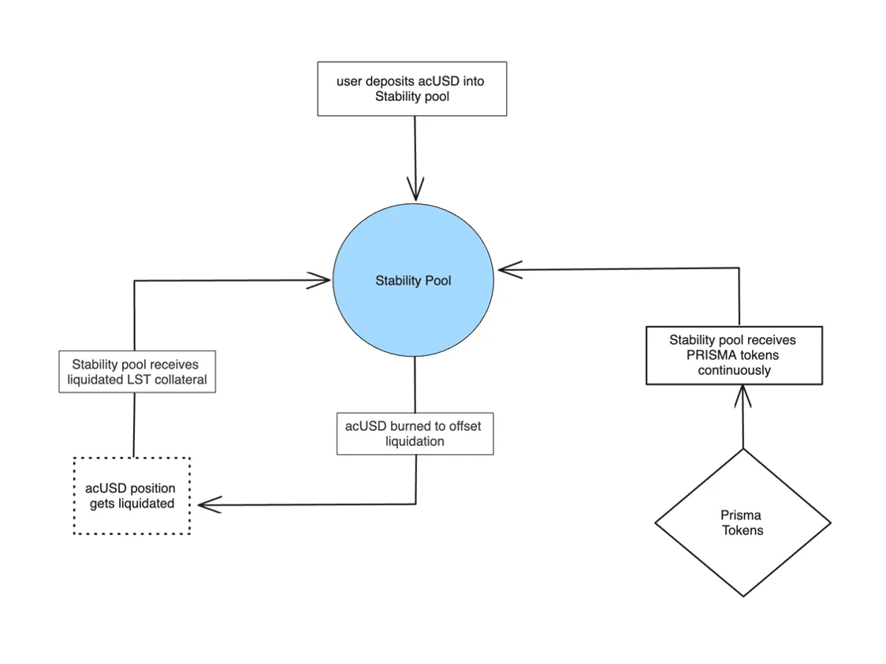
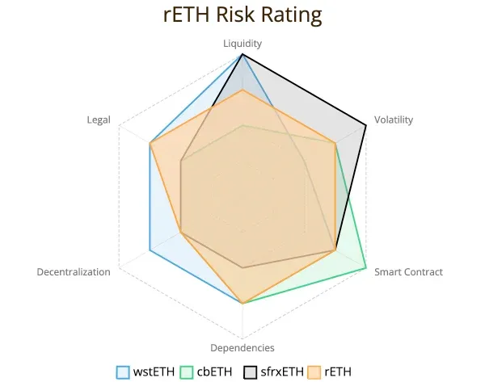
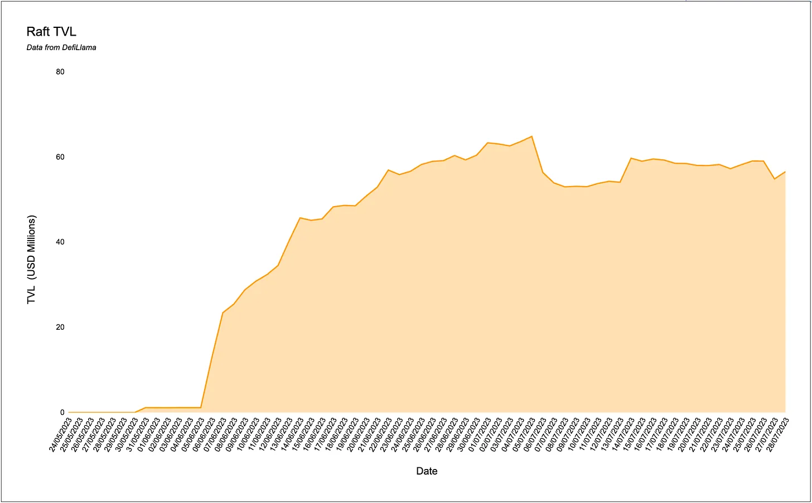
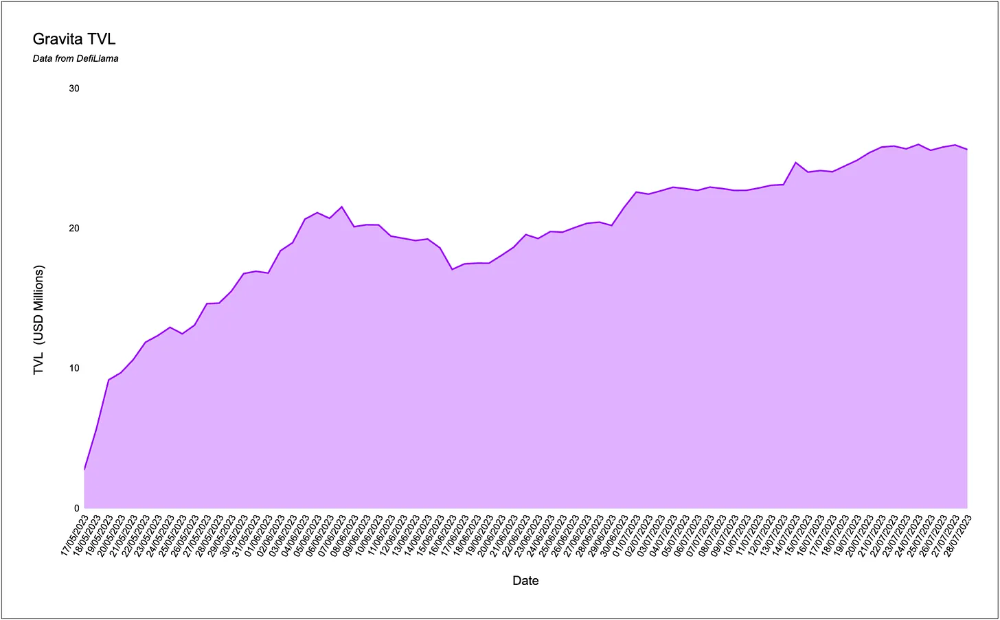
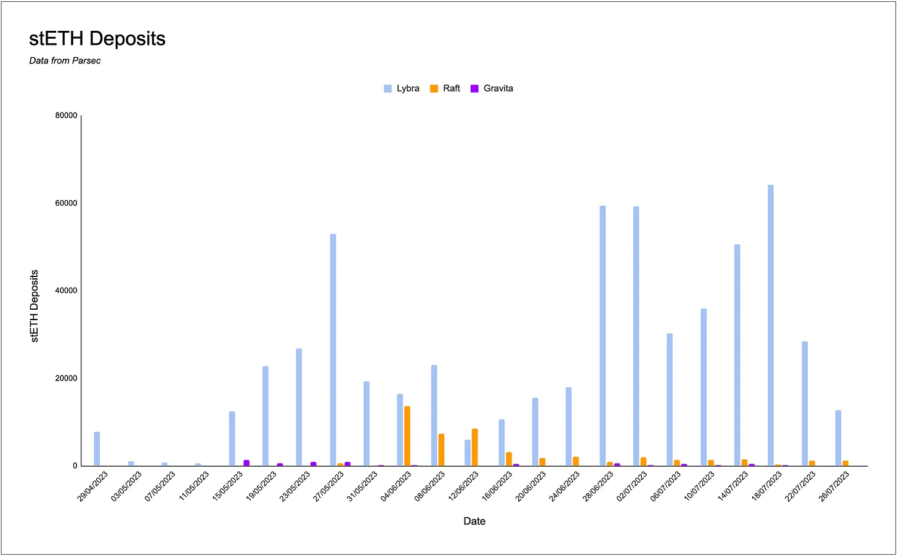
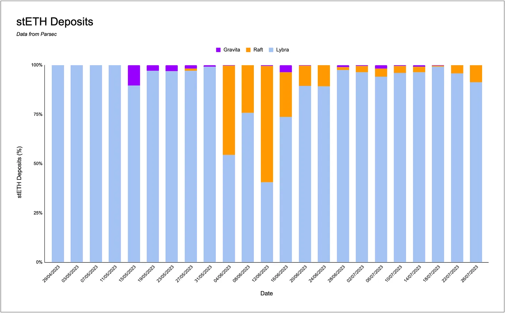

Overview
Prisma Finance is a decentralized stablecoin protocol, which enables users to deposit LSTs as collateral to mint mkUSD (prev acUSD), a native overcollateralized stablecoin. Prisma is backed by a number of large investors and founders including the Curve Finance founder, the Convex Finance founders, FRAX Finance, Conic Finance, the Coingecko Founders, OKX Ventures, the Swell Founder and more.
acUSD
Prisma allows users to mint mkUSD, a stablecoin fully [over] collateralized by various LSTs, built on top of the Liquity codebase. mkUSD will be incentivized on Curve and Convex, so that users can receive trading fees, CRV and CVX, as well as PRISMA and their Ethereum staking rewards.Users can stake their stablecoins and receive CRV and CVX rewards.
These rewards are predicted to be high since the Prisma will heavily incentivize stakers via their participation in the Curve wars. As Ethereum staking rewards accrue, the loans secured by the LSTs gradually repay themselves, providing a self-repaying mechanism for users.

Prisma Finance is a decentralized stablecoin protocol, which enables users to deposit LSTs as collateral to mint mkUSD (prev acUSD), a native overcollateralized stablecoin. Prisma is backed by a number of large investors and founders including the Curve Finance founder, the Convex Finance founders, FRAX Finance, Conic Finance, the Coingecko Founders, OKX Ventures, the Swell Founder and more.
acUSD
Prisma allows users to mint mkUSD, a stablecoin fully [over] collateralized by various LSTs, built on top of the Liquity codebase. mkUSD will be incentivized on Curve and Convex, so that users can receive trading fees, CRV and CVX, as well as PRISMA and their Ethereum staking rewards.Users can stake their stablecoins and receive CRV and CVX rewards.
These rewards are predicted to be high since the Prisma will heavily incentivize stakers via their participation in the Curve wars. As Ethereum staking rewards accrue, the loans secured by the LSTs gradually repay themselves, providing a self-repaying mechanism for users.
Liquity Overview and Mechanics:
Just a a refresher, Liquity is a decentralized protocol that allows users to deposit ETH and borrow a stable,LUSD, against it without paying interest. Users can lock up ETH as collateral in a smart contract and create a position called a “trove”. Each trove must to be collateralized at a minimum of 110% LTV, which allows users can then mint LUSD against their ETH collateral. Users can redeem their collateral back at any time.
Stability Pool
Prisma makes use of a Stability Pool mechanism, which functions as a safety net to ensure mkUSD and Prisma Finance’s solvency. Prisma has one shared Stability Pool, but will still allow users to have independent borrows from the different collaterals.
The Stability Pool is the main source of liquidity to repay debt from liquidated positions. Liquidations happen when a position collateral ratio falls below 110%. This makes sure that mkUSD supply is always backed.
When a position is liquidated, an amount of mkUSD corresponding to the remaining debt of the position is burned from the Stability Pool’s balance to repay its debt. In exchange, the entire collateral for the liquidated position is transferred to the Stability Pool. Stability Provider’s (LPs to the Stability Pool) are paid through this transferred collateral.
Just a a refresher, Liquity is a decentralized protocol that allows users to deposit ETH and borrow a stable,LUSD, against it without paying interest. Users can lock up ETH as collateral in a smart contract and create a position called a “trove”. Each trove must to be collateralized at a minimum of 110% LTV, which allows users can then mint LUSD against their ETH collateral. Users can redeem their collateral back at any time.
Stability Pool
Prisma makes use of a Stability Pool mechanism, which functions as a safety net to ensure mkUSD and Prisma Finance’s solvency. Prisma has one shared Stability Pool, but will still allow users to have independent borrows from the different collaterals.
The Stability Pool is the main source of liquidity to repay debt from liquidated positions. Liquidations happen when a position collateral ratio falls below 110%. This makes sure that mkUSD supply is always backed.
When a position is liquidated, an amount of mkUSD corresponding to the remaining debt of the position is burned from the Stability Pool’s balance to repay its debt. In exchange, the entire collateral for the liquidated position is transferred to the Stability Pool. Stability Provider’s (LPs to the Stability Pool) are paid through this transferred collateral.

Stability Pool Mechanics
LSTs
At launch, Prisma will support the following assets:
- wstETH (Lido Staked ETH)
- cbETH (Coinbase Wrapped staked ETH)
- rETH (Rocket Pool ETH)
- sfrxETH (Staked Frax Finance Ether)
- WBETH (Binance wrapped staked ETH)
The Caps on each of the assets are currently undecided (short risk assessments of stETH, cbETH and wbETH have been completed by PrismaRisk) and will be decided based on the audits and assessments by PrismaRisk. The independent team will evaluate the caps based on each of the LSTs collaterals fee structure, decentralization, and collateral.
An Example of collateral risk assessment on Rocket Pool's staked ETH (rETH): Link here.
At launch, Prisma will support the following assets:
- wstETH (Lido Staked ETH)
- cbETH (Coinbase Wrapped staked ETH)
- rETH (Rocket Pool ETH)
- sfrxETH (Staked Frax Finance Ether)
- WBETH (Binance wrapped staked ETH)
The Caps on each of the assets are currently undecided (short risk assessments of stETH, cbETH and wbETH have been completed by PrismaRisk) and will be decided based on the audits and assessments by PrismaRisk. The independent team will evaluate the caps based on each of the LSTs collaterals fee structure, decentralization, and collateral.
An Example of collateral risk assessment on Rocket Pool's staked ETH (rETH): Link here.

PRISMA Token
PRISMA will use a vote escrowed (ve) tokenomics model to control several aspects of the protocol, including:
- The stability pool
- Addition or removal of collaterals
- Caps and parameters on collaterals
- Mint, borrowing and redemption fees
- Interest rates on outstanding loans
- Emissions
vePRISMA holders will be able to change the minting and borrowing fees on any LST collateral and direct PRISMA emissions to LP tokens.
Voters can direct emissions to incentivize minting with a certain LST, to keep an active borrow with a certain LST, or to LP token stakers.
Based off this, it’s likely that the goal of Prisma Finance is aiming to create a flywheel/emissions war dynamic (similar to CVX, CRV, FRAX etc.):
- By incentivizing DAOs
- By incentivizing LST providers to buy and stake PRISMA to increase liquidity, incentivize minting of mkUSD using their LST collateral and more.
vePRISMA voting weight will be based on token lock length, similar to how veCRV works. Unlike veCRV though, users can have multiple locks with different lengths in parallel, as well as the ability to ‘freeze a lock’ (to avoid having to continuously relock it due to decaying).
Based on their voting weight relative to the total voting weight, users will be granted a boost on their PRISMA rewards (up to 2x). Further, users will be able to delegate their votes to Convex-like protocols to aggregate it and sell it for a fee.
As most LST issuers will have an interest in directing emissions towards actions such as minting with their own LST, a bribe layer will complement Prisma governance and its participants. For example, Frax Finance might use their own vote escrowed governance system to direct FXS emissions to users minting acUSD with sfrxETH.
LST Stablecoin Landscape
Currently, there are three major protocols who offer LST-backed stablecoins: Lybra, Raft and Gravita. All three protocols work in a similar way to how Liquity functions, with use of Collateralized Debt Positions (CDPs).
Lybra
Lybra Finance offers eUSD, a yield-bearing overcollateralized LST backed stablecoin. Lybra have attracted a lot of deposits which are consistently growing. This high total value locked is somewhat thanks to their aggressive liquidity mining program.
Since the launch of Lybra’s ‘LBR Phase 2 Mining Program’, Lybra has emitted esLBR ranging from 54,618 to 126,277 daily, depending on each user’s locking period. Most of these emissions (78%) are directed to the eUSD loan pool, while the remainder are split between the LBR/ETH Uniswap V2 LP pool (15%) and eUSD/USDC Curve LP Pool (7%).
PRISMA will use a vote escrowed (ve) tokenomics model to control several aspects of the protocol, including:
- The stability pool
- Addition or removal of collaterals
- Caps and parameters on collaterals
- Mint, borrowing and redemption fees
- Interest rates on outstanding loans
- Emissions
vePRISMA holders will be able to change the minting and borrowing fees on any LST collateral and direct PRISMA emissions to LP tokens.
Voters can direct emissions to incentivize minting with a certain LST, to keep an active borrow with a certain LST, or to LP token stakers.
Based off this, it’s likely that the goal of Prisma Finance is aiming to create a flywheel/emissions war dynamic (similar to CVX, CRV, FRAX etc.):
- By incentivizing DAOs
- By incentivizing LST providers to buy and stake PRISMA to increase liquidity, incentivize minting of mkUSD using their LST collateral and more.
vePRISMA voting weight will be based on token lock length, similar to how veCRV works. Unlike veCRV though, users can have multiple locks with different lengths in parallel, as well as the ability to ‘freeze a lock’ (to avoid having to continuously relock it due to decaying).
Based on their voting weight relative to the total voting weight, users will be granted a boost on their PRISMA rewards (up to 2x). Further, users will be able to delegate their votes to Convex-like protocols to aggregate it and sell it for a fee.
As most LST issuers will have an interest in directing emissions towards actions such as minting with their own LST, a bribe layer will complement Prisma governance and its participants. For example, Frax Finance might use their own vote escrowed governance system to direct FXS emissions to users minting acUSD with sfrxETH.
LST Stablecoin Landscape
Currently, there are three major protocols who offer LST-backed stablecoins: Lybra, Raft and Gravita. All three protocols work in a similar way to how Liquity functions, with use of Collateralized Debt Positions (CDPs).
Lybra
Lybra Finance offers eUSD, a yield-bearing overcollateralized LST backed stablecoin. Lybra have attracted a lot of deposits which are consistently growing. This high total value locked is somewhat thanks to their aggressive liquidity mining program.
Since the launch of Lybra’s ‘LBR Phase 2 Mining Program’, Lybra has emitted esLBR ranging from 54,618 to 126,277 daily, depending on each user’s locking period. Most of these emissions (78%) are directed to the eUSD loan pool, while the remainder are split between the LBR/ETH Uniswap V2 LP pool (15%) and eUSD/USDC Curve LP Pool (7%).

Raft allows users to deposit liquid staking tokens and pay a one time fee to generate R, a USD pegged stablecoin.
Raft recently launched in May and has since attracted approximately $60M in TVL from users depositing stETH and minting R.
Raft recently launched in May and has since attracted approximately $60M in TVL from users depositing stETH and minting R.

Another competitor in the sector, Gravita Protocol, allows users to deposit collateral and borrow GRAI with a maximum fee of 0.5% and a 0% interest on their loan. They recently announced that they will be launching on Arbitrum.
Initially they will support wETH, rETH and wstETH. Each will have a relatively small 500K GRAI mint cap.
Initially they will support wETH, rETH and wstETH. Each will have a relatively small 500K GRAI mint cap.

From these figures we can determine that Lybra has dominated in terms of TVL and stablecoins minted. This can be seen with Lybra’s approximate 10x higher TVL & consistent higher daily stETH deposits when judged against competitors. On most days Prisma’s market share of stETH deposits to mint stablecoins range from 75%-100% of deposits. This can largely be attributed to first mover advantage and investor mind share as the LBR token multiplied.
Prisma represents the first real competitor in the space as they will leverage the curve ecosystem to provide higher yield for stablecoin holders.

Prisma represents the first real competitor in the space as they will leverage the curve ecosystem to provide higher yield for stablecoin holders.
The number of stETH deposited into each stablecoin protocol

Lybra dominates market share of stETH deposited into stablecoin protocols

Disclaimer:
The information and services above are not intended to and shall not be used as investment advice.You should consult with financial advisors before acting on any of the information and services. ASXN and ASXN staff are not investment advisors, do not represent or advise clients in any matter and are not bound by the professional responsibilities and duties of a financial advisor.Nothing in the information and service, nor any receipt or use of such information or services, shall be construed or relied on as advertising or soliciting to provide any financial services.
The information and services above are not intended to and shall not be used as investment advice.You should consult with financial advisors before acting on any of the information and services. ASXN and ASXN staff are not investment advisors, do not represent or advise clients in any matter and are not bound by the professional responsibilities and duties of a financial advisor.Nothing in the information and service, nor any receipt or use of such information or services, shall be construed or relied on as advertising or soliciting to provide any financial services.